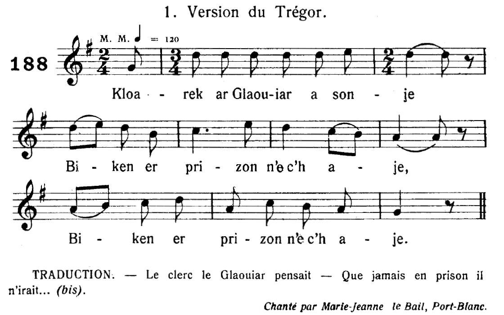

1° Anaig Lukaz
Annaïk Lucas
Annaïk Lucas
Chant collecté par Théodore Hersart de La Villemarquédans le 2ème Carnet de Keransquer (p.112).

Mélodies 188 et 189 publiées dans "Musiques bretonnes" par Maurice Duhamel
1: Recueillie auprès de Marie-Jeanne le Bail à Port-Blanc,
2: Notée par M. l'Abbé Le Besco à Sainte Tréphine (communiquée par M. F. Vallée)
Arrangement Christian Souchon (c) 2014
|
A propos de la mélodie Le 2ème air donné par Maurice Duhamel comme accompagnant "Annaïk Lukaz" des Gwerzioù II de Luzel (p. 428 et 438) est le même que le premier des 2 airs proposé 2 pages plus haut pour "Le Clerc Le Glaouiar" ou "Le Loyer" (Gwerziou II, p. 420) sous le N°188 (chanté par Marie-Jeanne Le Bail de Port Blanc). On en déduit que le second air (N° 189) noté par l'Abbé Le Bosco, convient également pour le présent chant. A propos du texte Le site https://tob.kan.bzh/chant-00217.html (classification Malrieu) recense 11 versions et 18 occurrences, auxquelles il font donc ajouter la présente version. La version notée par La Villemarqué est loin d'être claire: le motif de l'intervention du juge, et non des gendarmes, n'est explicité que dans une note de bas de page: "gwallet oa bet gant ar gouarnour"= "elle avait été violée par le gouverneur" Par ailleurs le chanteur semble confondre "barner" (=juge) et "baron", ce qui, outre la contamination évidente par le chant k16 Marianne Le Manson, rend le récit difficile à comprendre. L'intrigue type Le site tob;kan;bzh résume l'intrigue générale comme suit: Anne Lucas décide d'aller à la linerie (fête organisée à l'occasion du tirage du lin), contre l'avis du seigneur Le Glazon, sitôt que celui-ci s'est absenté. Quand elle danse, le sang jaillit de son nez et le lait de sa poitrine, ce qui prouve qu'elle a failli. Le lendemain, les gendarmes arrivent à la demeure seigneuriale pour emmener Anne. Ils évoquent en termes voilés la raison de l'arrestation: « Un bouquet de fleurs fines, elle a transplanté dans votre jardin, mais hors saison, ses racines viennent à gâter ». Par espect envers son protecteur, du Glazon, Anne n'est pas mise en prison mais dans une chambre de la geôlière. Anne écrit au fils aîné du Glazon qui, apprenant la nouvelle, fait seller son cheval pour se rendre immédiatement à Rennes. « Si Anne avait été mise en prison, j'aurais mis le feu aux quatre coins de la ville, j'ai le pouvoir de le faire ! ». Anne Lukas rejoint son sauveur dans son carrosse et s'apprête à mener une vie exemplaire de charité envers les pauvres. Classification Malrieu Référence : M-00217 Titre critique breton : Al lazherez en toullbac'h hag an aotrou (Annaig Lukas) Titre critique français : La meurtrière en prison et le seigneur (Annick Lucas) Thèmes : Infanticide On peut se demander si le thème principal de ce chant n'est pas plutôt une digression autour de la devise "Noblesse oblige", tout au moins telle que la muse populaire bretonne l'interprête. C'est particulièrement vrai de la version collectée par De Penguern qui, ici, fait suite à la version La Villemarqué. Arrêter une jeune fille accusée d'infanticide dans la maison du Baron du Glazon est, affirme-t-on aux gendarmes, une atteinte à l'honneur dudit Baron. Celui-ci après avoir fait obstacle à la décision de justice condamnant Annaïk à la pendaison, déclare qu'il épousera la mère de son enfant. Ce faisant il s'attire la réprobation de son plus jeune frère qui l'empêche de déchoir en tuant la malheureuse jeune femme. Par ailleurs le grief d'infanticide n'est pas justifié, car à la strophe 15, il est dit que l'enfant disparu a été confié à une nourrice en Léon. |
About the tune The 2nd tune given by Maurice Duhamel as accompanying the ballad "Annaïk Lukaz" in Luzel's "Gwerzioù II" (pp. 428 and 438) is the same as the first of the 2 tunes presented 2 pages above for "Clerk Le Glaouiar" or "Le Loyer " ("Gwerziou II", p. 420) under N ° 188 (as sung by Marie-Jeanne Le Bail of Port Blanc). We infer that the second tune (N ° 189) noted by Abbé Le Bosco, is also suitable for this song. About the lyrics The https://tob.kan.bzh/chant-00217.html site relating to the Malrieu classification of Breton songs lists 11 versions and 18 occurrences of the gwerz at hand, to which the present version should be added. The version noted by La Villemarqué is far from clear. In particular, the reason for the intervention of the judge, and not of the gendarmes, is only explained in a footnote: "gwallet oa bet gant ar gouarnour" = "she had been raped by the governor" Besides, the singer seems to confuse "barner" (= judge) and "baron", which, besides the obvious contamination by the song k16 Marianne Le Manson , makes the story difficult to construe. The archetypal plot pattern The tob.kan.bzh site sums up the archetypal plot as follows: Anne Lucas decides to go to the flax drawing dance party, against the Lord Du Glazon's advice, as soon as the latter is absent. When she dances, blood spurts from her nose and milk from her bosom, which proves that she has sinned. The next day, the gendarmes arrive at the Baron's stately home to take Anne away. They evoke in veiled terms the reason for the arrest: "A bunch of fine herbs, which she has transplanted into your garden, but since it was out of season, it failed to take root". Out of respect for her protector Du Glazon, Anne was not put in prison but accommodated in one of the jailer's rooms. Anne writes to the eldest son Du Glazon who, hearing the news, has his horse saddled to ride immediately to Rennes. "If Anne had been put in jail, I would have set fire to all the dwellings in the four corners of the city, I have the power to do it! ». Anne Lukas joins her savior in his carriage and prepares to be charitable to the poor for the rest of her life in an exemplary way. Malrieu classification Reference: M-00217 Breton critical title: "Al lazherez en toullbac'h hag an aotrou (Annaig Lukas)" English Critical Title: "The murderess in prison and the lord (Annaïk Lucas") Themes: Infanticide We can wonder if the main theme of this song is not, in fact, a digression around the motto "Nobility obliges", at least the way the popular Breton muse interprets it. This is particularly relevant for the version collected by De Penguern which on this page follows La Villemarqué's version. Arresting a young girl accused of infanticide in the Baron du Glazon's own house is, as objected to the gendarmes, an attack on the honour of said Baron. The latter, after obstructing the court decision ordering Annaïk to be hanged, declares that he will marry the mother of his child. In doing so he incurs criticism of his younger brother who prevents him from demeaning himself by killing the unhappy young woman. Furthermore, the infanticide complaint is not justified, because as stated in stanza 15, the missing child was in fact entrusted to a fostering nurse in Leon. |
1° Anaig Lukaz
Version du Carnet N°2, pp. 112 - 115
|
BREZHONEG (Stumm KLT) Anaig Lukaz Page 112 1. Malloz d'an eur ha malloz d'ar momed, An dennadeg lin pa oan antreet 2. M'em-boa ket tennet un hanter dornad Barner el liorzh a oa erruet, 3. Barner el liorzh a oa erruet: Hag hallfe antren er jardin en-doa goulet. Page 113 / 60 4. Hag a reas un dro en e reket Mar vefe bet ar barner d'ho kwelet (*): 5. - Gwallet (disenoret) eo ganeoc'h na ho preur belek Ha kenkoulz ho-peus a c'hoarezed. 6. - Ha mar e vefe gwir kement-se mañ. Me dont da guitaat, guitaat ma bro-mañ - 7. Nag Anaig Lukaz a lavare E ker a Roazhon pa errue: 8. - E pelec'h ema, amañ, ar prizon, Ma yafe Anaig Lukaz ennañ. 9. - Salokras, c'hwi er prison n'afec'h ket. C'hwi yel' e kambr gant va dimezelled, 10. C'hwi yel' e kambr gant va dimezelled, Ouzh ar memes taol e tebrfec'h boued, - 11. Hag Anaig Lukaz a lavare D'ar gouarnourez kozh un deiz a oe: 12. - Ne vefe ket kavet ur kannader? Me a skrivfe d'ar Glazon dont d'ar ger 13. - Skrivit ho lizher, skrivit pa garfec'h Kannadour awalc'h, sur, a vo kavet, 14. Kannadour awalc'h, sur, a vo kavet, Hini ar roue a vo mar karit. - 15. Pa erruas lizher gant ar Glazon, Oa oc'h ebatiñ gant div itron 16. Ha ne halle ket lenn he lizherenn Gant an daeloù a goue doc'h e benn Page 114 17. Pa 'n-devez al lizher peurlennet D'e balafrigner en-deus laret: 18. - Sternit din va c'harros, hag eñ kloz. Rak rankon mont da Roazhon fenoz 19. - Na pa stagan bep marc'h bep momed Da Roazhon fenoz rankon monet. 20. Rak Anaig Lukaz a zo barnet Hag e vezo krouget ha devet. - 21. E-barzh ar prison pa oa erruet, - Demat deoc'h,demat, -deus laret, 22. Demat deoc'h holl e-barzh an ti-mañ Kerkoulz d'ar bras ha d'ar bihan. 23. Kerkoulz d'ar bras ha d'ar bihannañ Anaig Lukaz pelec'h emañ? 24. - Mar 'ma Anaig Lukaz a glaskit, E-tal ar potañs eo he kavfet. - 25. Pa yae en-traoñ gant ar ru A vire an tan e bep tu 26. E-tal ar potañs pa oa erruet, Un tenn pistolenn en-deuz laosket. 27. Un tenn pistolenn en deuz laosket. Kein ar bourrev en-deuz torret. Page 115 / 61 28. Anaig Lukaz zo dilammet Ha war e varlenn so chomet. 29. - Digorit din ar c'harros a bep tu Ma welin ar beorien war ar ru. 30. Evit on bremañ barnourez Me a zo bet nav miz floderez. 31. Me zo bet e ti ma mamm ha ma zad 'Purañ ar geot zo war ar prat. 32. Ha ne oa den a roe din tamm boued 'Met pezh a roe din ma breur beleg, 33 Hennezh roe din darn deus he voued, Hag e wele alies da gousket. 34. - Me garfe gwel't ho mamm hag ho tad Vit gwalc'hiñ va c'hlezen gant o gwad, 35. Me garfe gwel't ho preur belek Evit reiñ dezhan ur gopr bennak. (*) (gwallet oa bet gant ar gouarnour) KLT gant Christian Souchon (c) 2020 |
FRANCAIS Annaïk Lucas Page 112 1. Maudits soient l'heure et l'instant de chagrin Où je m'en fus tirer du lin. 2. Une demi-poignée j'avais tiré Quand le juge s'est présenté, 3. A la porte du jardin, demandant S'il pouvait entrer un instant. Page 113 / 60 4. Il a fait le tour des lieux sans surseoir Demandant s'il pourrait vous voir (*) 5. - L'abbé votre frère est déshonoré Et vos soeurs, si vous en avez. 6. - Si c'est bien vrai ce que vous dites là, Je dois m'exiler de ce pas. - 7. Anne Lucas à Rennes se rendit Et auprès des passants s'enquit: 8. - Dites-moi le chemin de la prison: Anne Lucas, tel est mon nom. 9. - Ce n'est pas en prison que vous irez. Chez nos demoiselles, si fait! 10. C'est chez nos dames que vous logerez, A leur table vous dînerez, - 11. Annaïk Lucas un beau matin à La gouvernante demanda: 12. - Il me faudrait un messager, car j'ai Au Glazon un mot à porter. 13. - Quand vous voudrez, la lettre écrivez-la, Ce messager l'on trouvera , 14. On en trouvera sans peine, je crois, Fût-il le messager du roi. - 15. - Il salua le seigneur du Glazon, Avec deux dames au salon. 16. Qui lire la lettre à peine pouvait Tant ses yeux de larmes versaient. Page 114 17. Après avoir lu l'émouvant écrit A son palefrenier il dit : 18. - Attèle mon carrosse et vivement. Je pars pour Rennes dans l'instant. 19. - Qu'on change de chevaux autant de fois Qu'il faudra. Que ce soir j'y sois! 20. Anne Lucas qui vient d'être jugée Doit être pendue ou brûlée. - 21. Quand il mit pied à terre à la prison, Il salua rempli d'émotion: 22. Je vous dis bonjour, maître de céans Et à vous tous petits et grands. 23. Salut, que vous soyez grands ou petits, Anne Lucas est-elle ici? 24. - Si c'est Anne Lucas que vous cherchez, Elle est debout face au gibet. - 25. Il descendit la rue en évitant Les torches que portaient les gens. 26. Quand il arrive devant le gibet Il tire un coup de pistolet. 27. D''un seul coup de pistolet dans le dos. Il abat de loin le bourreau. Page 115 / 61 28. Au bas de l'échafaud Anne bondit Et vient se blottir contre lui. 29. - Ouvrez ce carrosse des deux côtés Les pauvres je veux saluer. 30. Toute femme de juge que je sois, Je fus délinquante neuf mois. 31. Mon père crut bon de me condamner A biner l'herbe dans les prés. 32. Personne ne voulait plus me nourrir Seul mon frère pour subvenir 33 A ma nourriture. Il m'offrit un lit Au presbytère où j'ai dormi. 34. - J'aimerais bien rencontrer vos parents, Et laver mon fer dans leur sang, 35. Quant à votre frère prêtre je tiens A récompenser son soutien. (*) (violée par le gouverneur [?]) Traduction Christian Souchon (c) 2020 |
ENGLISH Annaïk Lucas Page 112 1. Cursed be the hour and the moment When I got to the flax drawing party. 2. Half a handful I had pulled When the judge showed up, 3. At the garden gate, asking If he could come in for a moment. Page 113 / 60 4. He looked around everywhere Asking if he might speak to you (*) 5. - Your brother the priest is dishonored And so are your sisters, if you have any. 6. - If what you say is true, I must go in exile to another land. - 7. Anne Lucas went to Rennes And she asked passersby: 8. - Tell me the way to prison: My name is Anne Lucas. 9. - You're not going to jail: You shall sleep in the noble ladies' room 10. You will stay with our ladies, At their table you'll have your dinner, - 11. Annaïk Lucas one morning Asked the housekeeper: 12. - I want a messenger to carry A letter to Glazon manor. 13. - Please just write the letter, This messenger will be found, 14. He'll be found easily, I think, We'll send the king's messenger, if need be. - 15. - He greeted the Lord Glazon Who was playing games with two ladies. 16. He could barely read the letter Since his eyes were swimming with tears. Page 114 17. After reading the moving letter He said to his stable groom : 18. - Harness my coach and hurry up. I'm leaving for Rennes right now. 19. - We'll change horses as many times As needed. I must needs be there tonight! 20. Anne Lucas was tried And sentenced to be hung or burned. - 21. When he dismounted at the prison's gate, He greeted with emotion: 22. Hello, master of this house And to you all, young and old. 23. Good day, whether you are big or small, Is Anne Lucas here? 24. - You're looking for Anne, aren't you? She is on the scaffold, ready to be hung. - 25. He rushed down the street Keeping clear of the torches on both sides. 26. When he got to the gallows He fired a pistol. 27. With one shot in the back. He killed the hangman. Page 115/61 28. Down the scaffold Anne jumped, Ran to snuggle against him. 29. - On both sides open the car's door For I want to greet the poor. 30. Though I am now a judge's wife, For nine months I have been a wretch. 31. My father found it good to ban me To make me hoe the weeds in the fields. 32. No one wanted to feed me Only my brother provided food to me 33. He offered me a bed At the presbytery where I slept. 34. - I'm anxious to meet your parents, And wash my sword in their blood, 35. As for your priest brother I want To reward him for his support. (*) (raped by the governor [?]) |
2° Anaig Lukaz ou Le Marquis
Version du Carnet N°2, p. 203
|
BREZHONEG (Stumm KLT) Le marquis (Anaig Lukaz) Page 203 1. Me gar e vefe deuet an hañv Evit dougen un habit skañv, 2. Un habit skañv e lien moan 'Vit dougen ar markiz bihan. 3. - Ul lien moan n'ho-pezo ket, Satin ha bleuñv ne laran ket. 4. - Aotrou markiz, c'hwi oar avat Pa oamp 'n ho jardin e Wened. 5. Me oa plac'h koant a beizantez Ha bremañ emaon markizez. ___________________ |
FRANCAIS Annaïk Lucas Page 203 1. Je souhaite que vienne l'été Que je mette un habit léger, 2. De toile fine cet habit Pour porter le petit marquis. 3. - Ce n'est point ce qui vous convient, Mais toile fleurie et satin. 4. - Je fus jadis la paysanne, Dont, dans votre jardin de Vannes, 5. Vous vîtes la jeune beauté, Quoique marquise désormais. ___________________ |
ENGLISH Annaïk Lucas Page 203 1. Now I wish that summer would come: A fine light dress I would put on 2. A dress of fine canvas to be Pregnant with a little marquis. 3. - Not suitable to you this shade! Flowery canvas, satin instead. 4. - But, my Lord Marquis, remember, In Vannes,in your garden bowers, 5. T'was a fair country girl you saw, Albeit a marquise by now. ___________________ |
3° Anaig Lukaz
Version du manuscrit Penguern Ms 95
|
BREZHONEG (Stumm KLT) 1. - Pa vo ar linadeg en ho ti Mererez e kelverfet di? - 2. An dud yaouank goude o pred Da c'hoari a zo komañset. 3. Anaig e-kreiz ar jolori Tilamm ur boull gwad deus he fri 4. Vel ma azezas en he c'hoazez Dilamm al leizh-bronn deus he javed 5. Ma lare ar grwreg d'ar merc'hed Anaïk zo ur plac'h mañket. ------------------- 6. War-benn an deiz war lerc'h er beure Triwec'h a zo erruet 7. Triwec'h archer deus a Roazhon Da degas Anaïm d'ar prizon. 8. Debonjour ha joa er maner-mañ Anaig Lukas pelec'h emañ? 9. - Barzh er gegin o tijuniñ: Vit petra c'heus ezhomm anezhi? 10. - Ni zo deuet hon driwec'h daveti D'he kerc'hat da zon't d'al leandi. 11. - Oh, n'ed eo ket gant ar serjañted A vez kerc'het al leanezed. 12. - Anaig Lukas c'hwi n'ho-po ket Na observit deomp ar sujet. 13. - Balamour d'ur boked louzoù fin He-deus transplantet en ho jardin 14. N'he-deus hen ket plantet e koulz-vat : Komañs ra e wrizioù da washaat. 15. - N'he-deus ket lazhet he c'hrouadur Rak emañ en Leon o vezhur. 16. Anaïk d'ar prizon na n'ayo ket Respetiñ ti ar Baron a vo ret. ------------------- 17. - Anaïk, daoust pe c'hwi a kerzho Pe d'eus lost ar marc'h c'hwi a vreino? 18. - Archerien paour, oh, me ho ped Eus lost ar marc'h n'am stagit ket! 19. Eus lost ar marc'h n'am stagit ket Me a yel ganeoc'h lec'h ma kerfet. 20. - Anaïk, d'ar prizon na n'ayo ket Respetiñ ti ar Baron a vo ret. 21. - En respet da varon na da varkiz Ret eo sentiñ eus ar justis. ------------------- 22. Aotrou ar Baron a lavare En maner Glazon pa 'arrue: 23. - Daoust petra zo a nevez em zi Pa na zeu den da zigoriñ din? 24. Nag Anaïk koant d'am degemeret Evel ma oa kustum da donet? 25. - Anaïk koant zo aet d'er prizon. C'hwi a zo kiriek, ma breur Baron. 26. Triwec'h archer dimeus a Roazhon Zo bet o kas Anaig d'ar prizon. 27. Mar c'heus un tamm respet eviti Ni a yel hon triwec'h daveti 28. Ni a yel hon triwec'h daveti Rak a esteno meur a hini. ------------------- 29. Pajik, kerc'h ar c'hezek deus ar kloz Vit ma afemp da Roazhon fenoz. 30. Ha pa lazhfemp dek marc'h bep kammed, Fenoz da Roazhon vo ret monet. ------------------- 31. E ker Roazhon pa n'int diskennet An aotrou Baron -neus goulennet: 32. Pe lec'h ma ar prizon e ger-mañ Ma mañ Anaïk Lukaz ennan? 33. - Anaig er prizon n'ema ken Sortiet eo bremañ souden. 34. Na n'eus ket un hanter-heur amzer Maz' eo aet gant ar bourrev en ker. ------------------- 35. Anaig Lukaz a lavare War bazh nesañ er skeul pa pigne: 36. - Merc'hedigoù yaouank me ho ped Da servijiñ an noblañs na rit ket: 37. Vit bezañ servijet an noblañs Me 'm-eus ar groug vit ma rekompañs. 38. Me 'm-eus servijet en un ti E-lec'h ma voa triwec'h dudjentil, 39. Ha bep noz o kasent d'o gwele Hep klevet un drouk ger digante. 40. Met gant ar Baron dimeus an ti Siwazh kousket a vije ret din 41. Ha bremañ pa hon gantañ kollet, Gant an holl e hon abandonet. ------------------- 42. Ne oa ket he c'homz peurechuet Triwec'h kavalier zo c'hoarvezet: 43. An triwec'h breur a vaner Glazon Zo erruet war blasenn Roazhon. 44. Aotrou ar Baron gwall koleret Ha d'ar bourrev en-deus lavaret: 45. - Torr ta da kordenn, pe diskoulm hi! Degas Anaïk amañ din! 46. Ar plac'hig-se ne vo ket krouget. Respetiñ an noblañs a vo ret. 47. Degas anezhi ta din amañ Pe me yel d'he wintiñ ma-unan. ------------------- 48. Deut Anaig koant, deut ma fried Deut da choaz an abid a eured. 49. Ar Glazon bihan a grozmole Na d'e vreur hennañ pa n'hen kleve: 50. - Ma breur Baron, roit din-me, Anaig koant war ma inkane! 51. Roit ta din danvez hon Itron Me rento anezhi deoc'h en Glazon. ------------------- 52. Pa voent war an hent o vonet Ar Glazon bihan en-deus laret: 53. - Anaig paour, vit ar beure Graet ho-poa -c'hwi ho peoc'h gant Doue? 54. Divlam e oac'h en ho koñsiañs Vit mont da glevet ho setañs? 55. - Nouennet a voan bet ha deveret Na n'em reprochen ken mann ebet. 56. - Anaig paour, en añv Doue Pedit ar Werc'hez vit ho ene! - 57. Na oa ket e c'her peurechuet Gant e bognard neus hi treuzet. ------------------- 58. Pa n'errujont er maner Glazon Laras ar kadet d'e vreur Baron: 59. - Klaskit ur wreg all, mar karit Rak amzer homañ zo tremenet. Klt gant Christian Souchon |
FRANCAIS 1. - Quand vous aurez chez vous le tirage de lin Vous m'inviterez, fermière? - 2. Après le repas, les jeunes gens Commencent leurs jeux. 3. Au milieu des ébats Une goutte de sang tomba du nez d"Annette 4. Quand elle alla s'asseoir Le lait souilla sa gorge 5. Si bien que les femmes disaient aux jeunes filles Annette a manqué à ses devoirs. ------------------- 6. Le lendemain matin Dix-huit archers arrivaient 7. Dix-huit archers de Rennes Pour conduire Annette en prison. 8. Bonjour et joie en ce manoir Annette Lucas où est-elle? 9. Elle est à la cuisine. Elle déjeune Pourquoi en avez-vous besoin? 10. - Nous sommes venus la chercher pour La conduire au couvent. 11. - Oh, ce n'est pas par les sergents Que sont emportées les religieuses. 12. Vous n'aurez pas Annette Lucas Ou vous nous direz pourquoi. 13. - A cause d'un bouquet de fines herbes Qu'elle a transplanté dans votre jardin 14. Elle ne l'a pas planté en temps utile Et ses racines commencent à dépérir. 15. - Elle n'a pas tué son enfant Et il est en Léon en nourrice. 16. Annette en prison n'ira pas Vous respecterez la maison du Baron. ------------------- 17. - Annette, marcherez-vous, ou vous ferez-vous trainer à la queue d'un cheval? 18. - Pauvres archers, Oh! Je vous en prie Ne m'attachez pas à la queue d'un cheval. 19. Ne m'attachez pas à la queue d'un cheval. J'irai avec vous où vous voudrez. 20. - Annette, en prison n'ira pas Vous respecterez la maison du Baron. 21. - En dépit du Baron et du Marquis, La justice sera obéie. ------------------- 22. Le seigneur Baron disait En rentrant au manoir Du Glazon: 23. - Qu'y a-t-il de nouveau chez moi Que personne ne vienne m'ouvrir, 24. Qu'Annette la belle ne vienne Me recevoir selon son habitude? 25. - Annette la belle est en prison Et vous en êtes la cause mon frère le Baron. 26. Dix-huit archers de Rennes sont venus La prendre pour la conduire en prison 27. Si vous avez le moindre respect pour elle Nous irons tous les dix-huit la chercher. 28. Nous irons tous les dix-huit la chercher. Au grand ébahissement de plusieurs. ------------------- 29. - Petit page, sors les chevaux de l'enclos Que nous nous rendions à Rennes cette nuit. 30. Et quand nous crèverions dix chevaux à chaque pas, Il faut que nous soyons à Rennes cette nuit. ------------------- 31. En entrant à Rennes, Le Baron demandait: 32. Où est ici la prison qui renferme Annette Lucas? 33. - Annette n'est pas en prison, Elle vient d'en sortir 34. Il n'y a pas encore une demi-heure que le bourreau l'a emmenée en ville ------------------- 35. Annette Lucas disait en atteignant Le haur de l'échelle: 36. - Je vous en pris, jeunes filles, N'allez pas servir la noblesse. 37. Moi, pour avoir servi la noblesse, J'ai la potence pour récompense. 38. J'ai servi dans une maison où il y avait dix-huit gentilshommes, 39. Chaque soir, je les conduisais se coucher Sans qu'aucun ne tienne une inconvenante parole. 40. Mais avec le Baron, le seigneur du lieu, Hélas, il fallait reposer 41. Et maintenant qu'il m'a perdue, Tout le monde m'abandonne. ------------------- 42. Ces propos n'étaient pas achevés Que les dix-huit cavaliers parurent. 43. Les dix-huit frères du manoir du Glazon Défilèrent sur la place de Rennes. 44. Le seigneur Baron était plein de colère Et il dit au bourreau: 45. - Casse ou dénoue ta corde Amène-moi Annette! 46. Cette jeune fille ne sera pas pendue Vous respecterez la noblesse. 47. Amène-moi Annette, où je vais moi-même la chercher. ------------------- 48. Venez, belle Annette, venez mon épouse, Venez choisir votre toilette de noces. 49. Le plus jeune des Glazon murmurait Et disait en entendant son frère ainé: 50. - Mon frère le Baron, donnez-moi La belle Annette sur la croupe de mon cheval. 51. Confiez-moi notre future dame Je vous la rendrai à Glazon ------------------- 52. Tout en cheminant Le jeune Glazon lui dit: 53. - Ma pauvre Annette, ce matin Vous aviez fait votre paix avec Dieu, 54. Vous aviez purifié votre conscience Pour entendre votre condamnation? 55. - J'avais reçu l'extrème-onction et rempli mon dernier devoir. Ma conscience ne me reprochait plus rien. 56. - Pauvre Annette, au nom de Dieu, Priez la Sainte Vierge pour votre âme.. - 57. Parlant ainsi, Il la transperce de son poignard ------------------- 58. Quand il arriva au manoir de Glazon Le cadet dit au Baron son frère: 59. - Cherchez-vous une autre femme où vous voudrez. Le temps de celle-ci est passé. Traduction tirée du Ms de Penguern |
ENGLISH 1. - To your next flax drawing dance party Will you invite me, farmer? - 2. After the meal, the young men Started their games. 3. In the middle of the antics A drop of blood fell from Annette's nose 4. When she went to sit down Milk stained her bosom 5. So that elder women said to young girls: " Annette has sinned." ------------------- 6. The next morning Eighteen constables arrived 7. Eighteen constables from Rennes Who had come to take Annette to jail. 8. -Good day and joy in this mansion. Is Annette Lucas here? 9. She's in the kitchen. She is having lunch. Why do you want her? 10. - We have come to Take her to a convent. 11. - Oh, it's not by constables, usually, That nuns are taken away. 12. We won't give Annette Lucas away Or you must tell us why. 13. - Because of a bunch of fine herbs She transplanted into your yard 14. She didn't plant it in due time And its roots are starting to wither. 15. - She didn't kill her child. It is now in Leon fostered by a nurse. 16. Annette won't go to jail Don't offer an affront to the Baron's house. ------------------- 17. - Annette, do you want to walk, Or to be dragged behind a horse? 18. - Constables, please Don't tie me to the tail of a horse. 19. Don't tie me to the back of a horse. I'll follow you wherever you want. 20. - Annette to jail shall not go It would be an affront to the Baron's house. 21. - In spite of Baron and Marquis, Justice will be obeyed. ------------------- 22. The Lord Baron said On his way back to Glazon manor: 23. - What's new in this house? Nobody comes to open the door, 24. Let fair Annette Come And welcome me as usual! 25. - Fair Annette is in prison And it is on account of you, my brother Baron: 26. Eighteen constables came from Rennes To take her to prison 27. If you have the slightest respect for her The eighteen of us will go and fetch her back. 28. The eighteen of us will go and fetch her back Much to the amazement of many people. ------------------- 29. - Little page, get the horses out of the enclosure That we are riding to Rennes tonight. 30. Even if we must ride ten horses to death for it, We have to be in Rennes this very night. ------------------- 31. Upon entering Rennes, The Baron asked: 32. - Where's the prison here Where Annette Lucas is kept? 33. - Annette is not in prison, She has just got out of it 34. Not yet half an hour ago The executioner took her to town ------------------- 35. Annette Lucas said when she reached The highest rung of the ladder: 36. - Young girls, I'm talking to you: Don't go into service with noble families! 37. I was in such a family's service The gallows are my reward. 38. I served in a house where there were eighteen noble gentlemen, 39. Every night I saw them to bed And none of them said an unseemly word. 40. Except the Baron, the lord of the place, Alas, who made me sleep with him 41. And now he has given me up And everyone abandons me. ------------------- 42. These words were not finished yet When eighteen horsemen appear. 43. The eighteen brothers of Glazon manor Were marching across Rennes' main square 44. The Lord Baron was full of anger And he said to the hangman: 45. - Break or untie your rope! Bring me Annette! 46. ??This girl shall not be hanged You shalll respect the nobility. 47. Let Annette come forth or I'm going To get her myself. ------------------- 48. Come, fair Annette, come, my betrothed spouse, Come and choose your wedding gown. 49. The youngest Glazon brother whispered On hearing his eldest brother: 50. - My brother Baron, allow me to take Fair Annette behind me on the rump of my horse. 51. Entrust our future Lady to me I'll take her back to Glazon ------------------- 52. While they were on their way Young Glazon said to her: 53. - Unfortunate Annette, this morning Did you make your peace with God? 54. Did you clear your conscience Before you heard your sentence to death? 55. - I did receive the extreme anointing and fulfill my last duties. I am at peace with my own conscience. 56. - Annette, in the name of God, Pray the Blessed Virgin for your soul .. - 57. Speaking thus, He pierced her with his dagger ------------------- 58. When he got to Glazon mansion, He said to the Baron, his brother: 59. - Look for another wife wherever you want This one has ceased to live. |